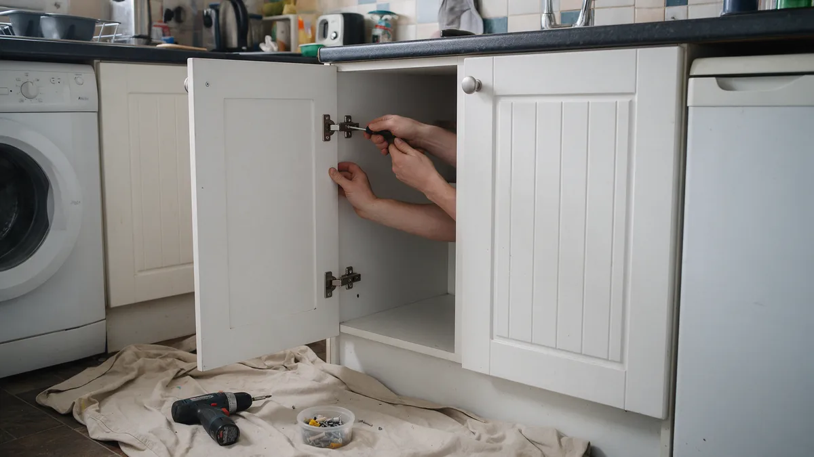

Generated photoWhat this coversOn the list
- Cupboard and wardrobe doorsOut of line, catching, or hanging on one hinge. Most kitchen hinges have two adjusters and a mounting plate, so it is usually a job of minutes once you know which screw does what.
- Handles, knobs and catchesDoor handles gone loose, a latch that does not spring back, a window handle that has stopped locking, a toilet seat that slides.
- Skirting, architrave and beadingPulled away from the wall, split at a joint, or a run that came off when the carpet went down.
- Filling, sanding and patchingOld fixing holes, a dent behind a door handle, a corner knocked off an edge bead. Filled, sanded flush and left ready for you to paint.
- Bath, shower and worktop sealsOld silicone cut out properly, the gap dried and cleaned, and a new bead run in one go.
- Floorboards, thresholds and squeaksA board that moves, a threshold strip lifting, a stair tread that has started to talk.
What goes elsewherePassed on
- Anything behind a wallIf it means chasing out plaster for a cable or a pipe, it is an electrician or a plumber.
- Plastering a whole wallPatching, yes. A full skim, no. That is a plasterer and it will look better for being one.
- Structural timberA joist, a lintel or anything holding a floor up is a builder's call, not ours.
Drawn, not photographed
The difference a written list makes
Both of these are the same five jobs in the same house. The one on the right gets more done, because it tells us what to put in the van before we set off.
Written in a hurry
Written in ten minutes
Why these jobs sit on the list for years
Almost none of them is difficult. What they have in common is that each one needs a tool you do not own, a fixing you do not have, or twenty minutes you never quite get. So they wait, and the list on the fridge gets longer rather than shorter.
That is the whole reason this trade exists, and it is also why a visit works better than a call out. One job is a trip. Ten jobs is a morning, and a morning gets through a surprising amount.
What we need to know first
For each job: which room, what the thing is, and what it is doing wrong. "Kitchen, cupboard door next to the sink, drags on the one beside it" tells us more than "kitchen cupboards" does, and it is the difference between the right hinge pack being on the van and not.
A photograph on your phone is worth three lines of writing, especially for anything with a bracket, a hinge or a catch on it.
What gets left, and why you will know about it
Sometimes a job opens up. A loose handle turns out to be a split door edge. A filled hole turns out to be a crack that is moving. When that happens you get told before anything else is done, and if it is not ours you get the name of the trade it belongs to rather than a shrug.
Questions
About this sort of job
Is anything too small?
No. The smallest job we have been asked for was a toilet roll holder. It went on a list with nine other things and the morning was worth doing.
Can you do it while I am out?
Usually, as long as somebody can let us in. Leave the list on the side and we will tick it as we go.
Do you fill and paint?
We fill, sand and leave it flush and ready. Painting a whole room is a decorator's job and they will cut in better than we will.
Put it on the list
Send the room, the thing and what is wrong with it, and we will tell you what fits in a visit.